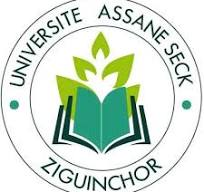

Initialement prévu pour être un Centre universitaire régional (CUR), le projet d'implantation d'un établissement à Ziguinchor s'est transformé en la création d'une université complète à la suite d'une décision du président Abdoulaye Wade. C'est ainsi que l'université de Ziguinchor a été pédagogiquement ouverte au cours du mois de février 2007. En 2013, l'établissement a été renommé en hommage à Assane Seck, un universitaire et homme politique sénégalais.